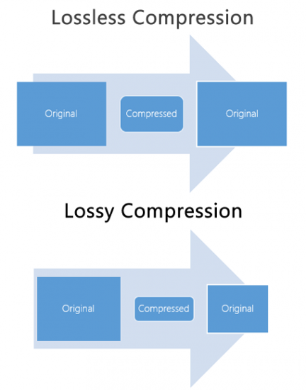
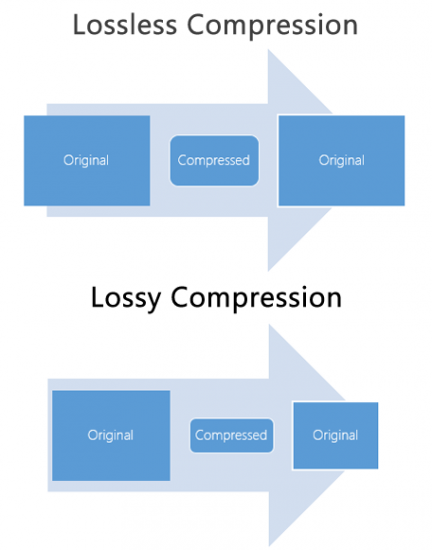

Compressie is kort gezegd eigenlijk het samendrukken of kleiner maken van opslag. wanneer je dus teveel afbeeldingen of bestanden hebt gaat dat veel opslagruimte innemen, en dat wil je niet hebben want zo raakt je harde schijf snel vol. Daarom bestaat er dus een datacompressie die ervoor zorgt dat die grote hoeveelheid aan opslag kleiner gemaakt wordt zodat je weer wat ruimte hebt om andere dingen op te slaan je opslag geraakt namelijk minder snel vol en je kunt ook bestanden sneller downloaden via het internet.
1.lossy compressie verwijst naar een manier van compressie waarbij een deel van de gegevens
van het orginele bestand verloren gaan. Dit gebeurt omdat het bestand zo verklein wordt
door een datacompressie dat niet alle informatie behouden blijft. Een voorbeeld daarvan is een
MP3 voor muziek of een JPEG voor afbeeldingen.
Voordelen:
-De bestanden worden veel kleiner waardoor ze minder opslagruimte nodig hebben.
-Als je een afbeelding wilt bewerken die al lossy verkleind is, kan dit leiden tot nog meer kwaliteitsverlies.
2.lossless compressie is een manier van compressie waarbij geen gegevens verloren gaan.
Het bestand wordt wel kleiner, maar je kunt het altijd terugbrengen naar de originele kwaliteit.
Voorbeelden hiervan zijn ZIP-bestanden en PNG-afbeeldingen. Kort gezien is het eigenlijk gewoon
het tegenovergestelde van een lossy compressie.
Voordelen:
-Omdat alle gegevens behouden blijven, blijft de kwaliteit van het bestand perfect.
-Door de kleinere bestandsgrootte kun je ze sneller uploaden en downloaden, wat handig is voor streamingdiensten.
Nadelen:
-Omdat er gegevens verloren gaan, kan de kwaliteit van het bestand slechter zijn.
Dit merk je bijvoorbeeld bij muziek die minder helder klinkt of bij afbeeldingen die korreliger zijn.
-Als je een afbeelding wilt bewerken die al lossy gecomprimeerd is, kan dit leiden tot nog meer kwaliteitsverlies.
Bij Lossy compressie heb je kleinere bestanden, maar die hebben wel meer kwaliteitsverlies en met Lossless compressie heb je grotere bestanden en hier juist zonder kwaliteitverlies.
 
